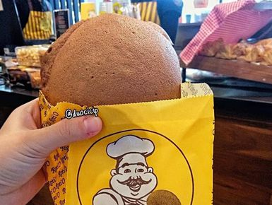
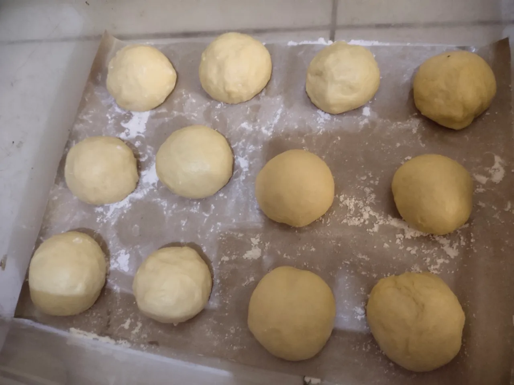
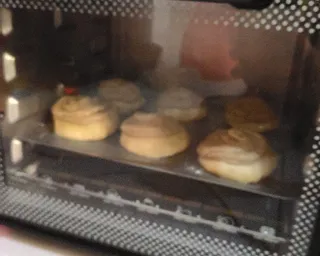

Resep Roti O dihalte Busway yang wanginya saja sudah tercium ketika pintu Busway baru saja terbuka

Roti o makanan yang sudah tidak umum tidak dibicarakan, bagaimana tidak roti o memiliki wangi khas kopi yang sudah
tercium kemana mana ketika rotinya baru saja jadi, jadi tidak heran banyak yang menyukai roti satu ini, terlebih roti o
mudah sekali ditemui dimana mana tak terkecuali stasiun krl, busway, atau mrt yang juga dibantu diramaikan oleh para konten kreator diberbagai
platform yang mereview jajanan satu ini, dan pasti banyak ingin mencoba membuat roti ini tanp harus membelinya terus,
siapa sangka membuat roti o tidak sesusah itu, mari kita buat :
Bagaimana Cara Membuat Roti O
pertama tama kumpulkan bahan bahan terlebih dahulu seperti tabel dibawah ini:
| Bahan Bahan Roti O |
| No. |
Adonan Roti |
Toping Kopi |
Isian Kopi |
| 1. |
300 gram terigu pro tinggi |
100 gram mentega |
100 gram mentega, masukan ke kulkas dulu agar mudah di bentuk, lalu potong dadu |
| 2. |
50 gram gula pasir |
100 gram gula halus |
| 3. |
5 gram ragi |
2 butir telor |
| 4. |
150 ml air hangat |
120 gram terigu pro sedang |
| 5. |
1/2 sdt garam |
2 sdm kopi bubuk tanpa ampas + air panas 2 sdm (larutkan) |
| 6. |
25 gram susu bubuk |
100 gram gula halus klo ingin lebih manis bisa tambah sesuai selera |
| 7. |
50 gram mentega |
1/2 sdt Baking powder |
| 8. |
1 butir telor |
Tahapan Tahapan Pembuatan
- Membuat Adonan
- Campur susu bubuk + air hangat + ragi + gula diam kan 10 menit sampai berbuih
- Campurkan tepung, telur, bahan campuran ragi, uleni setengah kalis,
- Tambah kan garam mentega uleni hingga kalis elastis (windowpane test)
- Bulat kan adonan tutup kain lembab, diamkan 1 jam hingga adonan mengembang 2 kali lipat
- Membentuk Roti
- Kempiskan adonan, bagi jadi 12 bagian sama rata,
- Pipihkan, beri mentega kotak ditengah, bulat kan rapat,
- Susun di loyang, beri jarak, diamkan lagi 30 menit.

- Membuat Toping Kopi
- Kocok mentega dan gula halus sampai lembut.
- Masukan telur satu per satu kocok rata.
- Masukan larutan kopi aduk rata.
- Tambahkan tepung dan baking powder aduk sampai halus.
- Memanggang
- Panaskan oven 180°c
- Semprot toping melingkar di atas roti jngn terlalu penuh

- Panggang 15 - 20 menit sampai roti mengembang dan toping retak wangi.
- Sajikan hangat
notes: Tips anti gagal. 1, pastikan air hangat suam suam kuku jngn panas agar
ragi tidak mati. 2, mentega isi harus dingin supaya saat di panggang bisa meleleh di dalam roti.